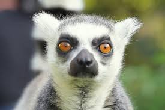
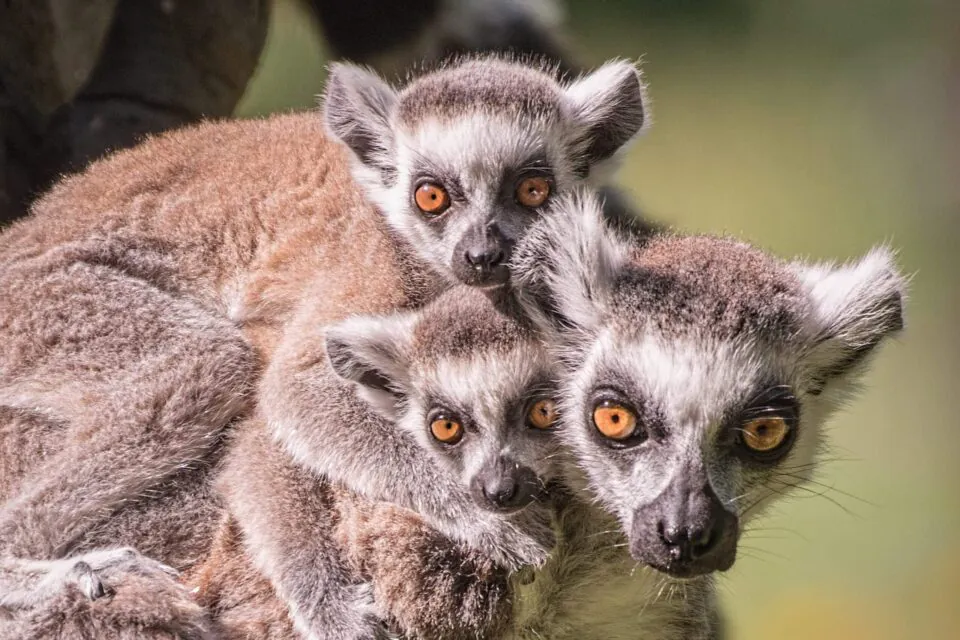
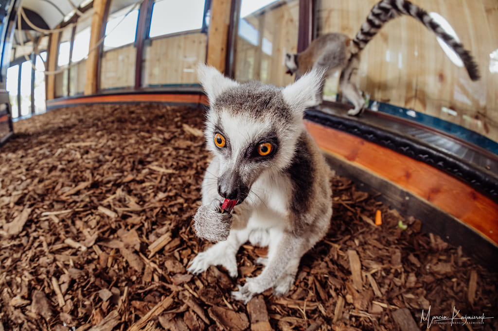

Pochodzenie
Madagaskar – suche lasy i sawanny
Wielkość
40–45 cm + ogon 55–60 cm
Długość życia
15–20 lat (w niewoli do 25)
Tryb życia
Dzienny, bardzo społeczny – żyje w grupach
Cechy szczególne
Długi pasiasty ogon, charakterystyczne nawoływania
Słynny „król Julian” – towarzyski, inteligentny i bardzo aktywny

Madagaskar – suche lasy i sawanny
40–45 cm + ogon 55–60 cm
15–20 lat (w niewoli do 25)
Dzienny, bardzo społeczny – żyje w grupach
Długi pasiasty ogon, charakterystyczne nawoływania
Lemur katta ma szare futro, białą twarz i charakterystyczny czarno-biały ogon. Jest bardzo ekspresyjny, zwinny i świetnie skacze. Jego mimika i zachowania społeczne są niezwykle rozwinięte.

22–28°C
Bardzo wysoka – skacze, biega, wspina się
Głośne nawoływania, szczególnie w grupie
Silnie stadny – samotny lemur cierpi psychicznie

Lemury katta są bardzo inteligentne, emocjonalne i społeczne. Komunikują się głosem, zapachem i gestami. Wymagają dużej grupy, przestrzeni i codziennej aktywności, inaczej mogą popaść w stres.
Wymaga stałej opieki, kontaktu i życia w grupie